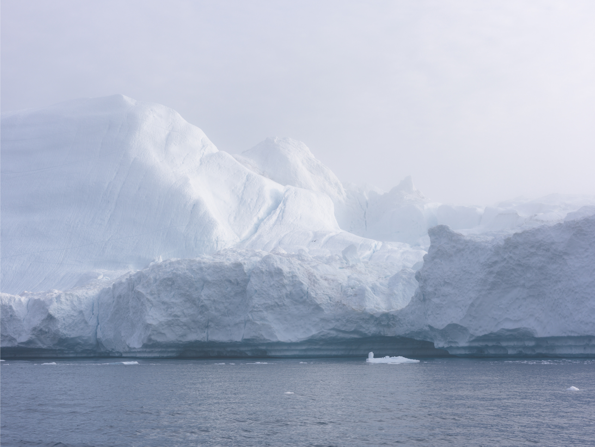
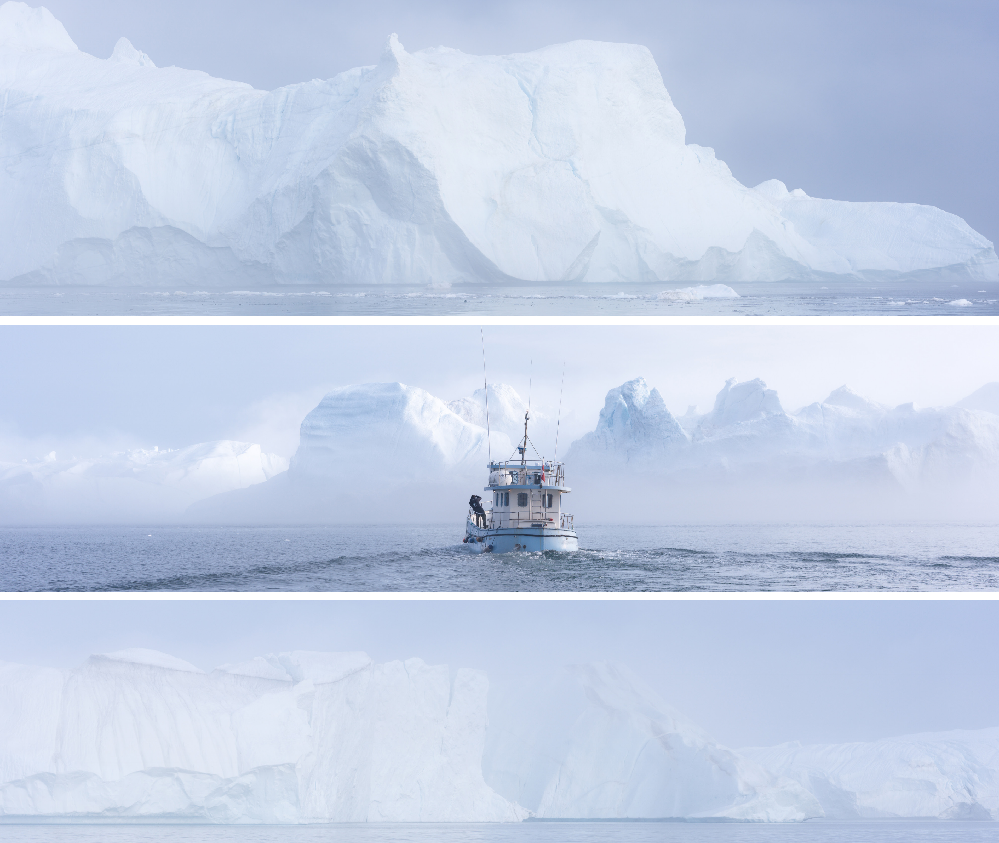
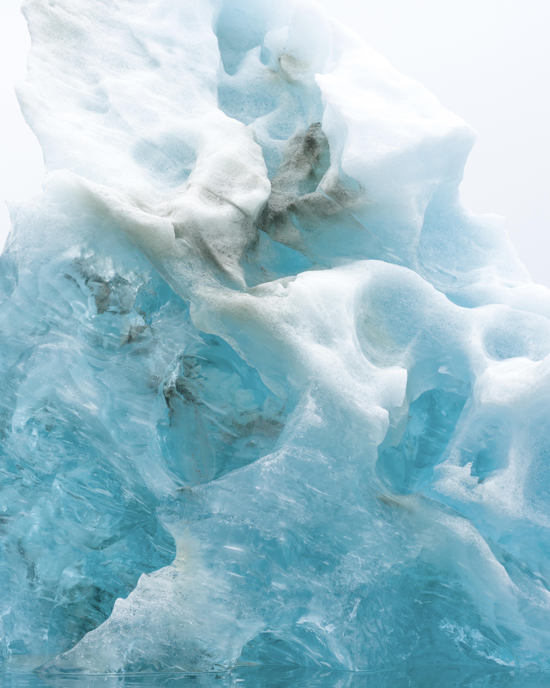
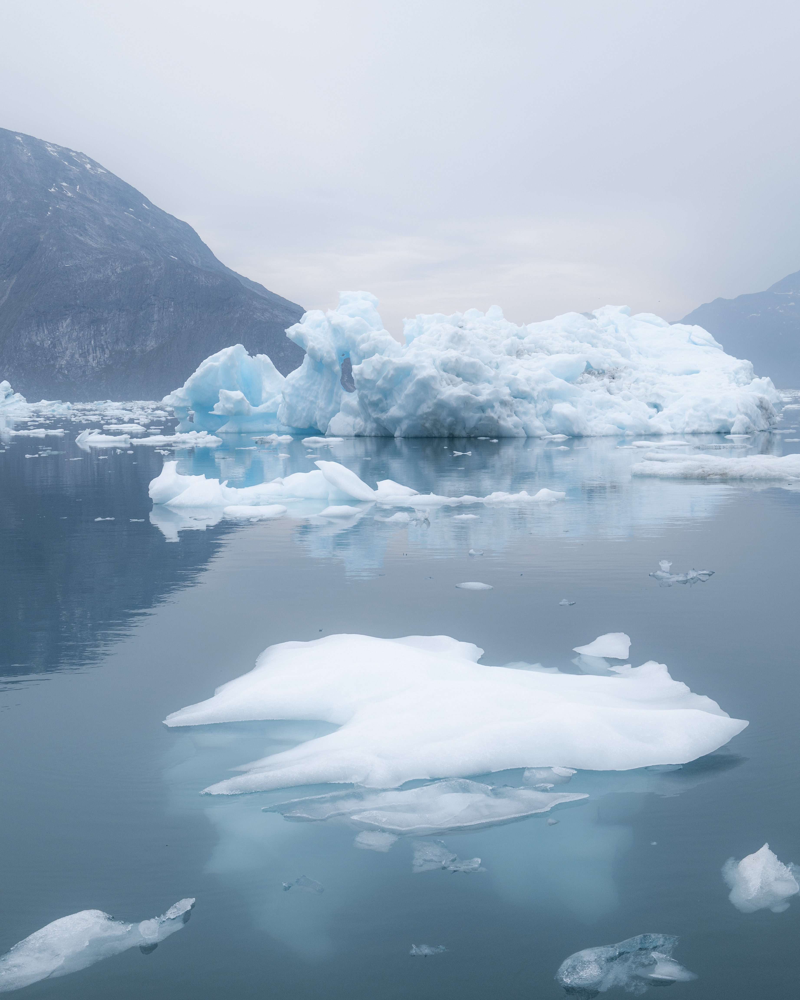

After the Sublime
GREENLAND · ICELAND · SVALBARD
A glacier appears still, yet it never stops changing. It moves, fractures and melts across a timescale that exceeds an individual life.
Human traces enter the frame only briefly: a boat, a grave, a house, a road, a fragment of infrastructure. They become points of reference between human time and glacial time.
ICE EDGE
GREENLAND

Immense things disappear so slowly that, for a moment, their disappearance can appear permanent.
THE EDGE OF ICE / 2026THREE BLUES
ICE / WATER / SKY


The glacier does not answer the human gaze.
It is a world unto itself.
DRIFT PATTERN
ICELAND
At the waterline, ice is no longer a distant mass. It becomes scale, fracture, sound and temporary form.

HUMAN TIME
SVALBARD

Boats, graves, houses and remains enter the frame as brief references. The landscape does not preserve them because they are important. It simply allows them to remain for a while.

Yingqi Chen
Photographer and spatial researcher working across landscape, architecture, memory and the traces of human presence within environments that exceed human scale.